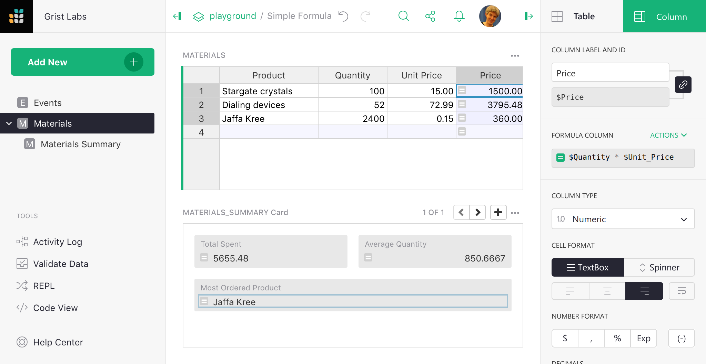
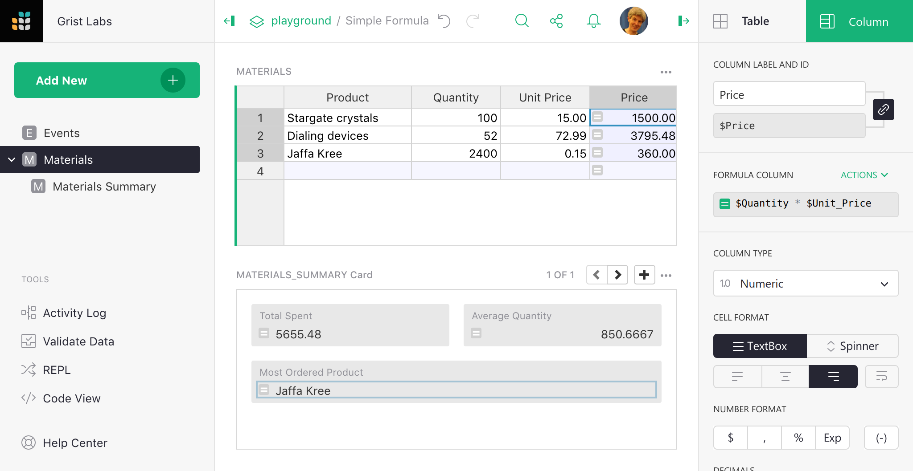

Formulas#
Grist has a powerful data engine to help you fill in the cells of your tables, using formulas. If you’ve used spreadsheets before, or database expressions, you’ll be on familiar territory - but there are some wrinkles you’ll want to know about, so hang around.
Let’s start with a classic use of spreadsheets. Suppose you have a list of products you’ve ordered, the quantity you ordered, and the unit price of each. You’ve made a column to show the quantity times the unit price, but want the computer to do that part for you.

Just select a cell in the column you want to fill, and hit “=” to tell Grist you want to enter a formula, rather than a value.

Did you notice, when you did that, the labels of the columns changed a little? “Product” became “$Product”, and “Unit Price” became “$Unit_Price”. This is Grist telling you how to refer to those columns in your formula. Just type “$Product * $Unit_Price”. You’ll find an auto-complete feature ready to help you. Or if you don’t like typing, click on the Product column, type the multiplication symbol, and then click on the Unit Price column. Your formula should look like this:

To control the identifier used for columns in formulas, see Renaming columns. Now press enter, and your formula is applied to all cells in the column.

Grist formulas are written in Python, the most popular language for data science. The entirety of Python’s standard library is available to you. For those with a spreadsheet background, we’ve also added a suite of Excel-like functions. Here’s the full list of functions.
If you’ve worked with spreadsheets before, you may be surprised
that you don’t need to specify row numbers, like B1 * C1.
In Grist, a single formula applies to a whole column.
You don’t have to worry about filling it in for all rows,
and can refer to values in the same row without fuss.
Formulas that operate over many rows#
If you are a spreadsheet user, you may find yourself wanting to have some special rows at the end of your table that have formulas different to the rest. In Grist, we’d like you to consider adding a widget to your page instead. For common use cases, Summary tables may be exactly what you need. Or if you want to set things up yourself, you can add an extra table widget like this (see Page widgets for details):

This is just another table, giving us a place to put formulas outside of the structure of the Materials table. For example, if we wanted to count how many products there are in that table, we could use this formula:
len(Materials.all)
Every table in your document is available by its name in formulas, as a UserTable. This formula uses the all method to access the rows of the table, but doesn’t do anything with them but count them.
Here’s a formula to compute the average price, using the Excel-like function AVERAGE:
AVERAGE(Materials.all.Price)
The all method returns a RecordSet, which supports iterating over individual columns this way. Equivalently, we could use a Python list comprehension:
AVERAGE(material.Price for material in Materials.all)
If you are not familiar with Python, it is worth following a tutorial. There are thousands online, including this official one. Python will be useful to you for all sorts of data work, not just Grist.
List comprehension is useful once we’re doing anything nuanced. For example, here’s a formula to list the names of products with a quantity greater than 80:
[m.Product for m in Materials.all if m.Quantity > 80]
This is a list comprehension, but now with a conditional. The result is a list, which is rendered as text in a cell.
Python can help in other ways in your search for rows. For example, here’s a formula to find the name of the product with the highest quantity:
max(Materials.all, key=lambda m: m.Quantity).Product
Formulas are case-sensitive, with Excel-like functions being all-caps (MAX), and
regular Python generally all lowercase (max).
For exact matches, there is a shortcut to avoid iteration called lookupRecords, or lookupOne for single matches. Just pass the the values of columns you require to be matched. For example, here is a formula to look up the product name of a material with a quantity of 52:
Materials.lookupOne(Quantity=52).Product
For very large tables, it is wise to use lookups as much as you can, rather than iterating through rows.
Returning to our example document, you can now see how we calculated the
Total Spent, Average Quantity, and Most Ordered Product columns:
| Column | Formula |
|---|---|
| Total Spent | SUM(Materials.all.Price) |
| Average Quantity | AVERAGE(Materials.all.Quantity) |
| Most Ordered Product | max(Materials.all, key=lambda m: m.Quantity).Product |
Separating out calculations like this from the body of your data can take some getting used to, but working this way can help keep your document more organized. And it brings other advantages. For example we could switch the formatting of the summary widget via the side panel:

If you really want to have a column change its behavior on different rows,
you can just use a conditional. For example, here is a replacement for
the Materials.Price formula that shows a total on a row where the
product name is not set:
if $Product:
return $Quantity * $Unit_Price
else:
return SUM(m.Price for m in Materials.all if m.Product)
Notice that the sum is limited to rows that have the product name set - otherwise the calculation would include itself in the sum and blow up (Grist would warn you about a “cyclic dependency”).
Code viewer#
Once you have a lot of formulas, or if you have been invited to a document and want to get an overview of its formulas, there is a code viewer available with a pure Python summary of the document.

Special values available in formulas#
For those familiar with Python, here are the extra values available to you in Grist:
recis the current row. The$columnsyntax is shorthand forrec.column. Therecvariable is of type Record.tableis the current table, and is of type UserTable.- Tables in your document are available by their name, and are also of type UserTable.
- Many extra spreadsheet functions are available, see the full function list.
If your table or column has a space in its name, or other characters that are awkward in Python, those characters are replaced with an underscore. Auto-complete may help you if you’re not sure. You can also control the “ids” of columns and tables in the right side panel.
Freeze a formula column#
If you’d like to save the output of your formula as plain values, you can simply turn off the formula. First open the column options in the side panel:
 

Now click on the orange formula icon in the side panel to turn it off:  ➔
➔  :
:

Notice that there is no = sign in the column cells any more, showing that it
is no longer a formula. The cells will no longer change if other cells they used
to depend on change.
You don’t lose your formula by turning it off. The formula itself remains and you can turn it back on. If you modified the values in the column, however, they will be recalculated by the formula. You can always undo to revert back to the previous state.
The side panel has lots of other handy settings, such as cell formatting (number of digits after decimal point, color, etc). The options apply just as much to formula columns as to regular columns.
Lookups#
Grist functions lookupOne and
lookupRecords are useful for enumerating
subsets of your data. For example, suppose we added a Category
column to our Materials table, and wished to list all products belonging
to a specific catagory. We can do this with lookupRecords, by calling
it on the table of interest, and supplying it with the column values
to match. Here’s an example:

If you are following on, see Adding a field
for details of how to add a new field to a card. If you care about the order
of results, lookupRecords takes an optional sort_by parameter. For example,
we could use this formula to sort by the product name itself:
list(Materials.lookupRecords(Category='Ship', sort_by='Product').Product)
If you want to sort by multiple columns, remember that you can create a hidden formula column that combines data in any way you like, and then sort by that.
The order of records returned by lookupRecords may not match the order of rows
you see in a table. To get that order, sort_by='manualSort. This is an
internal column that is updated with the manually established sort order
of rows.
If you find yourself doing a lot of look-ups, please consider whether Summary tables and Summary formulas might be what you are looking for.
Recursion#
Lookups are handy for recursive formulas. Suppose we have a table counting how many events we have per day, and want to add a cumulative sum of those event counts. One way to do that is with a formula like this:
yesterday = Events.lookupOne(date=$date - datetime.timedelta(days=1))
$events + (yesterday.cumulative or 0)

For clarity, we’ve split this formula into two lines. The first line
makes a variable pointing to the row of the day before. The second
line computes the value we want in the cell. Python note: the value
of the last line is automatically returned (you could prefix it with
return if you like).
Notice the yesterday.cumulative or 0 - for the earliest row in the
table, there will be no yesterday. In this case, lookupOne returns
a special empty record, for which yesterday.cumulative will be
None.
If you’d like to simplify this formula, or find yourself using the
same lookup in multiple formulas, it would be worth making
yesterday a reference column. Simply add
a reference column, and give a formula for it that matches how
we defined yesterday here.
To actually enter this formula in a cell, you’d use Shift+Enter
to divide the lines. For longer formulas, you may prefer to use
the side panel, where a simple Enter gives you a new line.
Click on the column header, select “Column Options” and edit the
Formula field.